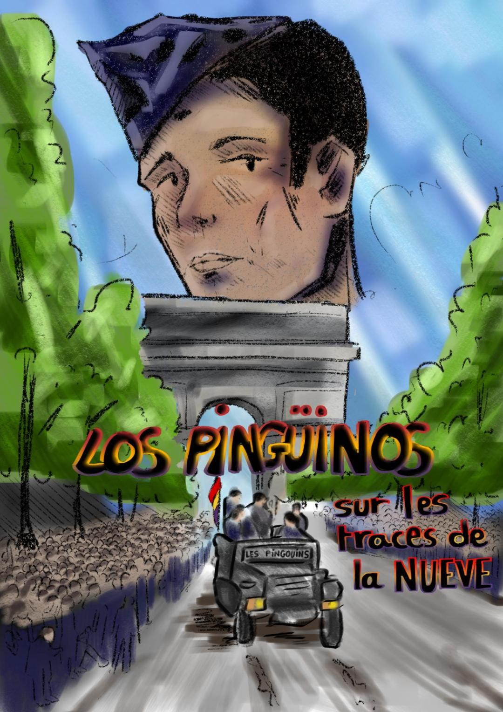

Les 22 élèves hispanistes de la classe de Terminale G6 du Lycée Sophie Germain vous présentent leur film :

Los pingüinos : sur les traces de la Nueve
⠀
Une petite fille découvre le journal de son grand-père, combattant au sein de la 2e DB ayant libéré Paris en 1944. À travers ses écrits, elle suit son histoire captivante mêlant passé et présent et part sur ses traces dans la capitale dans une quête de mémoire.
⠀
Catégorie: Histoire, Mémoire et Transmission, Guerre, Drame historique, Mystère
⠀
Dans le rôle de la petite-fille : Cheyenne Raynal.
Voix du grand-père : Alfonso San Miguel.
Voix off : Alexandre Sator.
⠀
Professeure : Mme Tighlit
Pôle Histoire, Sources et Archives: Alexandre, Salma, Willen, Mohammed, Myriam.